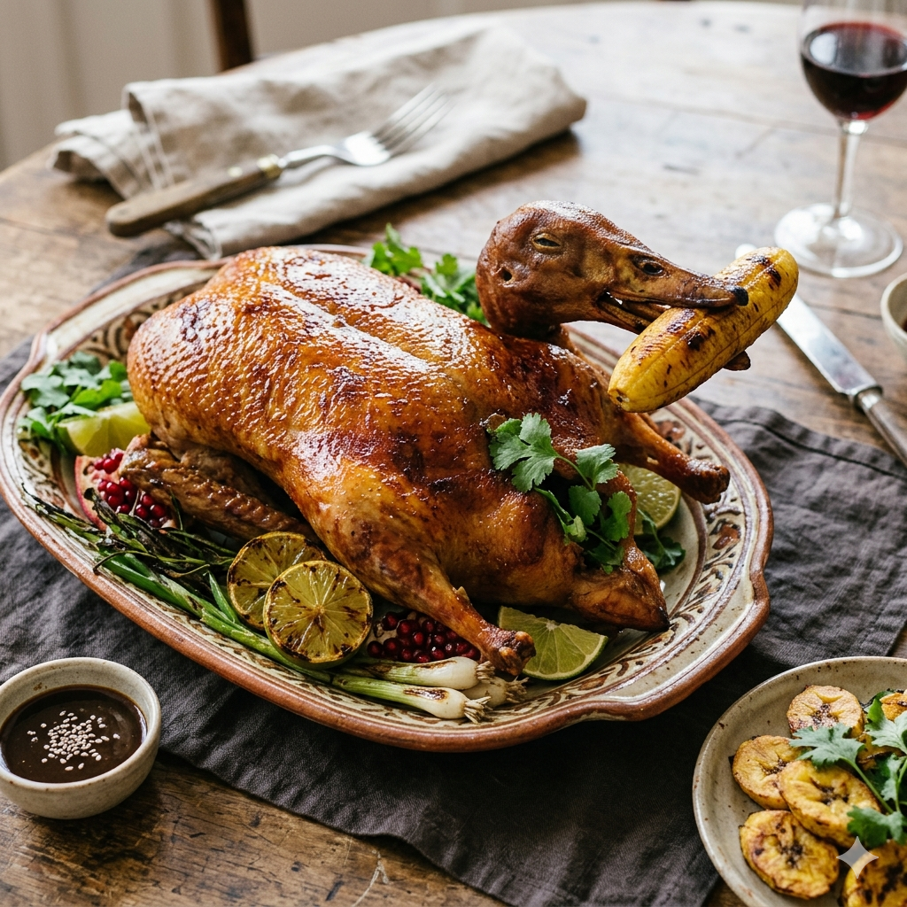

Back to index
Duck goes banana

A delicious roasted duck presenting us with a sweet treat.
Ingredients
- A big duck
- A small babana
- A small bowl with a black sauce and white seeds floating on top.
- Sliced lemon
- Herbs
- Salt, pepper
Steps
- Roast your duck in an oven
- Peel the banana and roast it too
- Prepare a plate with lemon and herbs
- Carefully place the duck on top of this healthy bed, move the duck head on the wrong side of the body for a sloppy AI effect
- Open the duck mouth and gently place the banana
- Place the small bowl with black sauce and floating white seeds on the side
- Season with salt
Enjoy your duck!